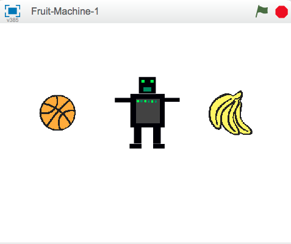
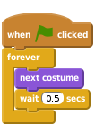
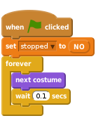
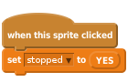
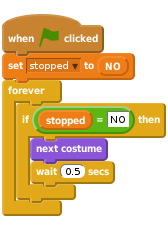
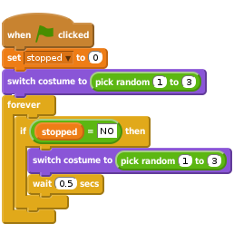
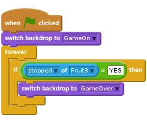
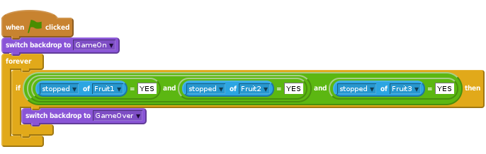
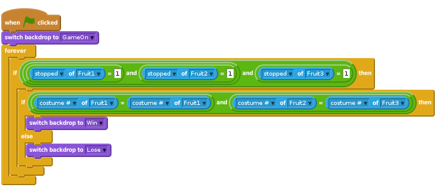

Đây là 1 trò chơi đơn giản có 3 hình sprit để đổi trang phục. Bạn phải ngăn chúng lại khi chúng hiện ra hình ảnh giống nhau (giống 1 máy hoa quả!).

scratch2
Chúng ta hãy nhập những hình ảnh khác nhau cho trò chơi
Bây giờ chúng ta có 1 số trang phục rồi, chúng ta muốn hình sprit đổi các trang phục với nhau.
Scripts.Events và kéo 1 khối when flag clicked vào khu vực script. Khi chúng ta click vào hình cờ màu xanh thì trò chơi bắt đầu.forever và kéo nó rồi thả xuống phần cuối.Looks và kéo thả vào phần next costumeControl và kéo thả vào khối wait 1 secswait 1 secs?
Click the green flag. (Click vào cờ màu xanh)
Trang phục có thay đổi ở 1 tốc độ hợp lý không?
Điều chỉnh thời gian ở khối wait 1 secs. Bạn nghĩ con số nào làm trò chơi trở nên quá dễ, hoặc quá khó?
Tuyệt! Chúng ta có thể dùng hình sprit thay đổi trang phục mãi mãi, nhưng làm sao chúng ta có thể khiến nó dừng lại khi click vào đó?
Một cách để thực hiện điều này là sử dụng 1 biến số để đặt trạng thái của hình sprit. Điều này sau này cũng sẽ rất hữu ích...
Data và Make a variable. Gọi là stopped và chỉ dùng cho hình sprit này, sau đó bỏ dấu tick ở hộp bên cạnh để nó không hiện trên màn hình nền nữa.
stopped thành "YES" khi click vào hình sprit.
stopped đổi thành "YES". Thêm 1 vòng lặp if...then và sử dụng 1 khối điều hành equals [] = [] mới (ở bên dưới thẻ Operators) để kiểm tra xem stopped có phải vẫn là "NO" không.
Click the green flag, wait for a moment, then click on the sprite. (Click vào cờ màu xanh lá cây, đợi 1 chút, sau đó click vào hình sprit)
Nó có thay đổi trang phục trước khi click vào đó không?
Nó có dừng lại khi click vào đó không?
Start the program again. (Bắt đầu chương trình lại) Nó có dừng lại khi đặt con trỏ chuột trên đó mà không click không? Hình sprit có dừng khi khi bạn click ở bất kỳ chỗ nào trên màn hình nền không?
Now we need to make the other sprites so we can play our game! (Bây giờ chúng ta cần tạo những hình sprit khác để có thể chơi trò chơi)
Click vào hình cờ màu xanh. Tất cả các hình sprit nên thay đổi. Cố gắng dừng tất cả trên cùng 1 hình ảnh bằng cách click vào từng hình một!
Chúng ta hãy dùng hình sprit đổi thành 1 bộ trang phục bất kỳ khi click vào hình cờ xanh.
Khi bắt đầu trò chơi ngay sau khi tải, tất cả các hình sprit có cùng 1 trang phục và sau đó thay đổi theo liên kết.
Nếu chúng đổi trang phục theo cách khó đoán hơn, trò chơi sẽ trở nên thú vị (và khó hơn).
costumes cho 1 hình sprit, bạn sẽ thấy mỗi bộ trang phục có 1 con số. Bạn có thể xác định 1 hình sprit mặc trang phục gì bằng cách sử dụng tên hoặc con số.switch costume to với pick random (1) to (3) để chọn số trang phục.forever để hình sprit chuyển sang 1 bộ trang phục khác mỗi lần nó thay đổi trong suốt trò chơi.
Click vào hình cờ màu xanh. Tất cả các hình sprit nên đổi trang phục theo 1 tiến trình khó đoán.
Nếu muốn thêm 1 bộ trang phục khác thì chúng ta cần thay đổi script như thế nào?
Làm trò chơi trở nên khó hơn
Thay đổi độ khó của trò chơi theo 1 cách nào đó. Nếu chỉ làm trang phục thay đổi nhanh hơn thì khá dễ. Liệu bạn có thể nghĩ ra cách gì giàu trí tưởng tượng hơn không? Một vài ý tưởng có thể bạn muốn thử:
Hãy vui vẻ thưởng thức những thứ của riêng mình!
Mỗi lần thay đổi, hãy nghĩ xem nó làm trò chơi dễ hơn hay khó hơn. Liệu trò chơi có quá dễ hoặc quá khó không? Làm sao có thể điều chỉnh được độ khó để nó ở mức vừa phải?
Chúng ta hãy làm hiển thị tin nhắn "Game Over" cho người chơi khi họ kết thúc
Đầu tiên, chúng ta hãy tạo 1 hình nền khác để hiển thị khi trò chơi kết thúc.
Backdrops. Đổi tên hình nền hiện tại thành "GameOn".Scripts{.blocklightgrey cho sàn chơi và đặt hình nền "GameOn" hiển thị khi trò chơi bắt đầu.stopped để lưu lại xem mỗi hình sprit đã được click chưa? Chúng ta hãy kiểm tra biến số stopped cho hình sprit Fruit3 để xem trò chơi đã dừng lại chưa. Chọn hình sprit Fruit3 và sau đó sử dụng khối x position of Fruit3 từ thẻ Sensing, nhưng đổi x position thành stopped.
Click the green flag. Does the "Game Over" message appear when you click on Fruit3?
What happens if you stop Fruit3 before you've clicked on both of the other fruit sprites? Let's
modify our script so that it will work regardless of the order in which the sprites are stopped.
stopped variables set to YES, we can use the and {. blockgreen} operator. This is a compicated block that can be quite fiddly to assemble, so try and put it together one step at a time.
Click the green flag. Does the "Game Over" message appear when you all 3 Fruits are stopped.
regardless of the order you clicked on them?
The aim of the game is to click on the sprites so they stop while showing the same costume. It would be nice to also display a message that told you whether you'd won or lost.
if...then...else block to see if the player has won or lost by comparing each costume # (costume number) using a similar x position of Sprite block like we did before. This time, instead of looking at the stopped variable, we can check thecostume # and see if Fruit1 has the same costume as Fruit2, and if Fruit2 has the same costume as Fruit3.
Click the green flag. Does the correct message appear when the game has finished? What will happen if each sprite's costume numbers don't match (for example, if Fruit2's costume number 3 is an apple and Fruit3's costume number 3 is a melon)?
Well done you’ve finished the basic game. There are more things you can do to your game though. Have a go at this challenge!
Different people will have different skills at playing the game. How could you make the game adjust its difficulty depending on the player?
One way you could do it is to adjust the speed the costumes change at. You can use a variable, called delay, to give the duration of each sprite’s wait block. If the player wins the round, the delay can be reduced a little (to make the game harder). If the player loses the round, the delay can be increased a little (to make the game easier).
You'll probably need to think about using a different way of starting the game each time it is played instead of the when flag clicked Then you can store values in variables that are remembered between each round of the game.
Well done you’ve finished, now you can enjoy the game!
Don’t forget you can share your game with all your friends and family by clicking on Share on the menu bar!